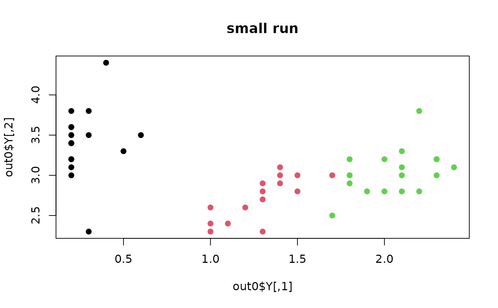

Feature Subset Selection using Expectation-Maximization (FSSEM) takes a wrapper approach to feature selection problem.
It iterates over optimizing the selection of variables by incrementally including each variable that adds the most
significant amount of scatter separability from a labeling obtained by Gaussian mixture model. This method is
quite computation intensive as it pertains to multiple fitting of GMM. Setting smaller max.k for each round of
EM algorithm as well as target dimension ndim would ease the burden.
do.fssem(
X,
ndim = 2,
max.k = 10,
preprocess = c("null", "center", "scale", "cscale", "whiten", "decorrelate")
)an \((n\times p)\) matrix or data frame whose rows are observations and columns represent independent variables.
an integer-valued target dimension.
maximum number of clusters for GMM fitting with EM algorithms.
an additional option for preprocessing the data.
Default is "null". See also aux.preprocess for more details.
a named list containing
an \((n\times ndim)\) matrix whose rows are embedded observations.
a list containing information for out-of-sample prediction.
a \((p\times ndim)\) whose columns are basis for projection.
Dy JG, Brodley CE (2004). “Feature Selection for Unsupervised Learning.” J. Mach. Learn. Res., 5, 845--889.
## run FSSEM with IRIS dataset - select 2 of 4 variables
data(iris)
irismat = as.matrix(iris[,2:4])
## select 50 observations for CRAN-purpose small example
id50 = sample(1:nrow(irismat), 50)
sel.dat = irismat[id50,]
sel.lab = as.factor(iris[id50,5])
## run and visualize
out0 = do.fssem(sel.dat, ndim=2, max.k=3)
opar = par(no.readonly=TRUE)
plot(out0$Y, main="small run", col=sel.lab, pch=19)

par(opar)
if (FALSE) {
## NOT-FOR-CRAN example; run at your machine !
## try different maximum number of clusters
out3 = do.fssem(irismat, ndim=2, max.k=3)
out6 = do.fssem(irismat, ndim=2, max.k=6)
out9 = do.fssem(irismat, ndim=2, max.k=9)
## visualize
cols = as.factor(iris[,5])
opar = par(no.readonly=TRUE)
par(mfrow=c(3,1))
plot(out3$Y, main="max k=3", col=cols)
plot(out6$Y, main="max k=6", col=cols)
plot(out9$Y, main="max k=9", col=cols)
par(opar)
}